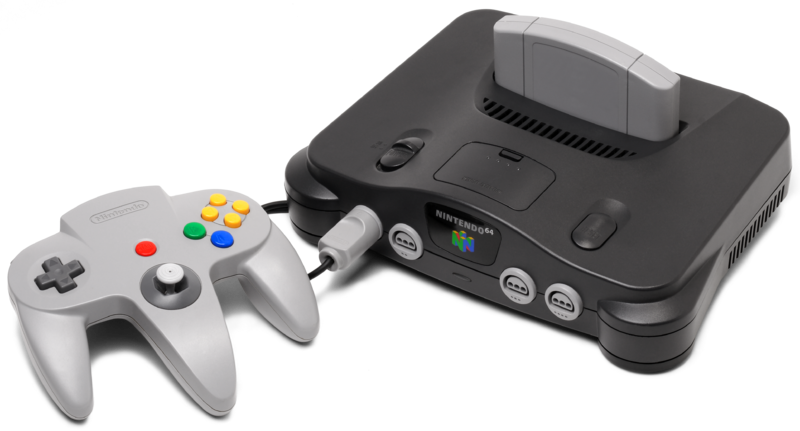
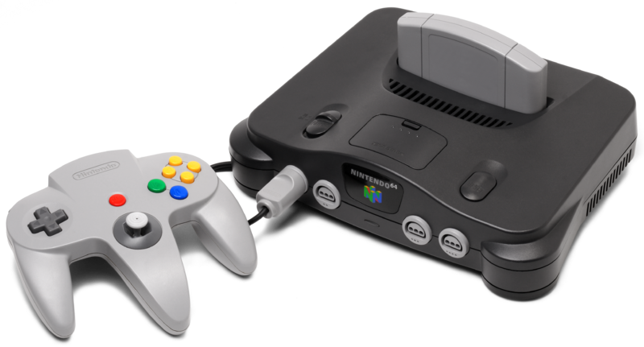

This is a website that allows you to search for information about various classic games made by Nintendo. We provide search engines that allow you to look up any game made on the Nintendo Entertainment System (NES), Super Nintendo Entertainment System (SNES), and Nintendo 64 consoles. We also provide a list of the top 100 Nintendo games!
Nintendo started developing video games for the NES in 1984, when they came out with classics like Donkey Kong, Super Mario Bros., The Legend of Zelda, and many others. In 1992, Nintendo released the Super NES which saw games like Donkey Kong Country and The Legend of Zelda: A Link to the Past. Then, in 1997, Nintendo released the Nintendo 64. The Nintendo 64 saw instant classics like The Legend of Zelda: The Ocarina of Time (a game that set new standards for (video games) and Super Smash Bros.

 
